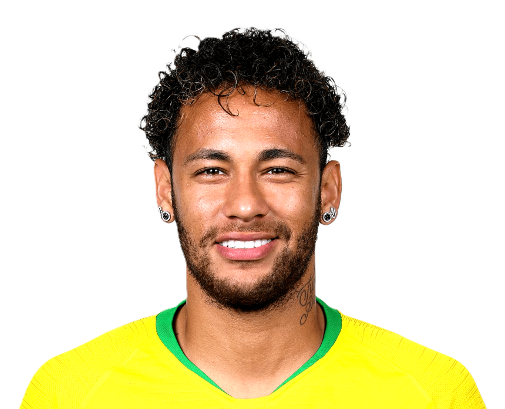
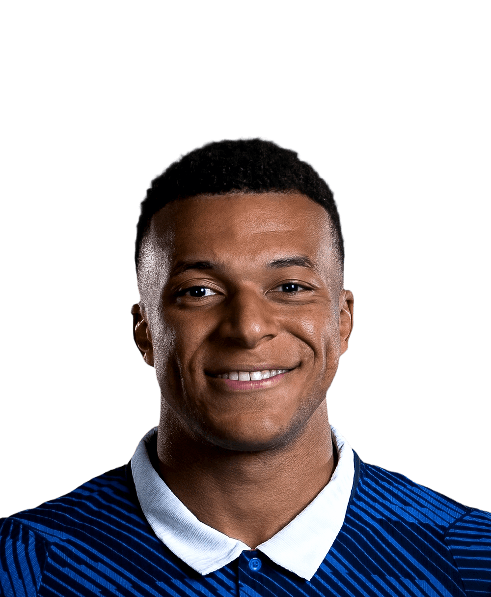
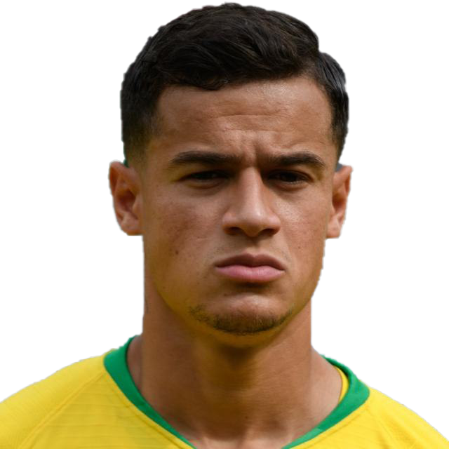
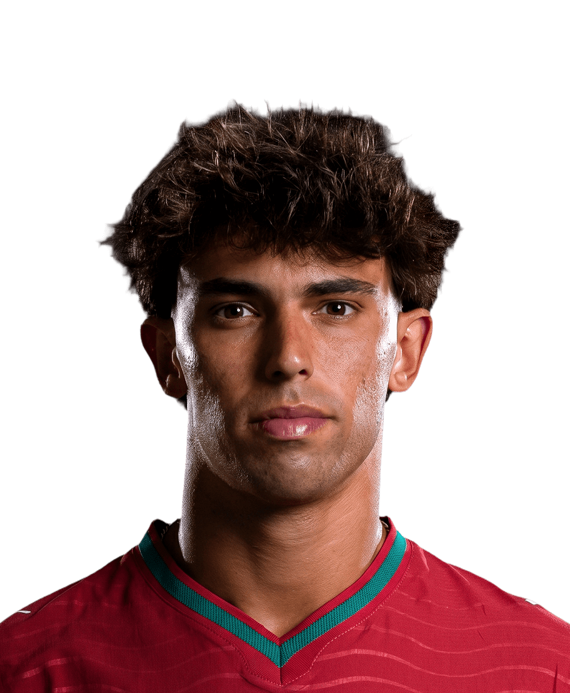
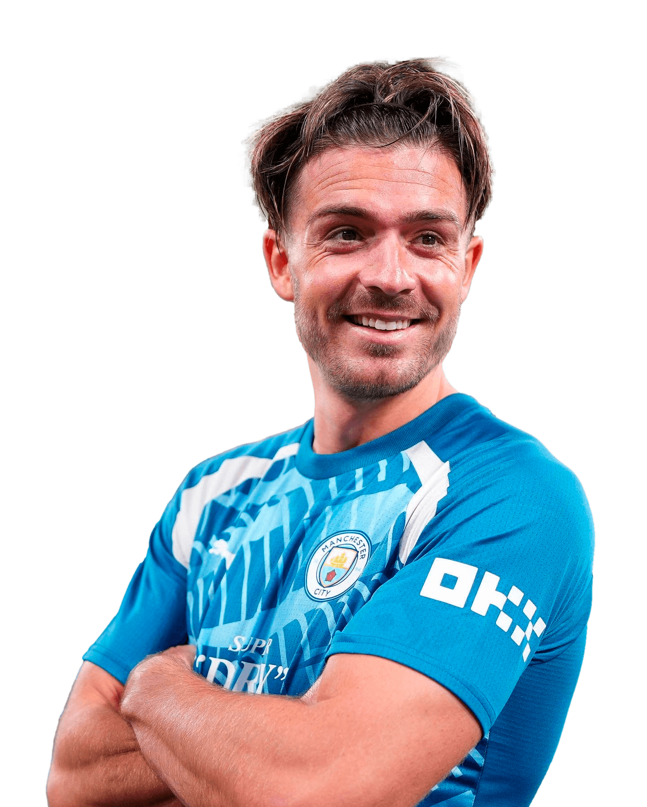
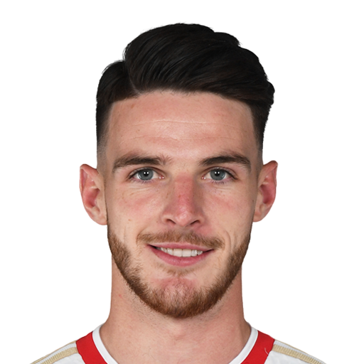
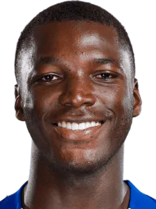
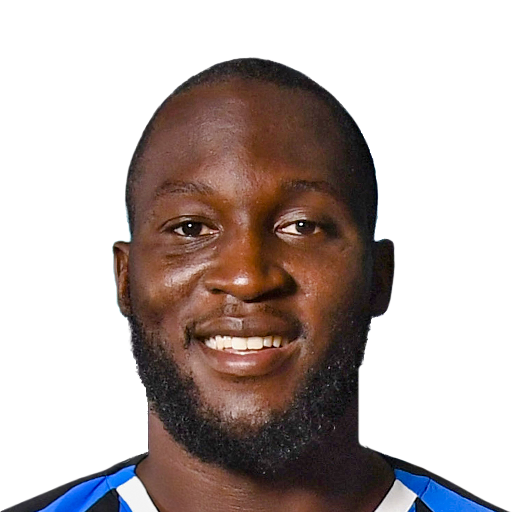
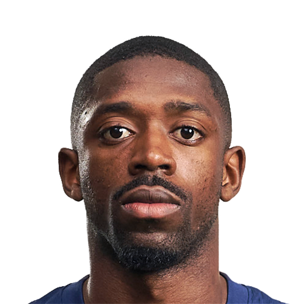

Dalam era sepak bola modern, nilai transfer pemain melonjak drastis. Transfer tidak lagi sekadar perpindahan pemain, tetapi juga simbol ambisi, strategi, dan kekuatan finansial klub-klub elite Eropa.
1. Neymar

€222M (Barcelona → PSG)
Transfer ini mengguncang dunia sepak bola. PSG menebus klausul rilis Neymar
untuk keluar dari bayang-bayang Messi. Kepindahan ini mengubah peta kekuatan
Eropa dan menjadi simbol era baru sepak bola modern.
2. Kylian Mbappé

€180M (Monaco → PSG)
Setelah tampil luar biasa bersama Monaco, Mbappé menjadi bintang masa depan.
PSG menjadikannya ikon klub dengan harapan besar untuk mendominasi Eropa.
3. Philippe Coutinho

€145M (Liverpool → Barcelona)
Diharapkan menjadi penerus kreativitas Barcelona, namun performanya tidak
sesuai ekspektasi dan sering dianggap sebagai transfer gagal.
4. João Félix

€126M (Benfica → Atlético Madrid)
Wonderkid Portugal dengan talenta besar, namun harus beradaptasi dengan
sistem taktik ketat Atlético Madrid.
5. Enzo Fernández

€121M (Benfica → Chelsea)
Gelandang juara dunia yang dibeli mahal setelah tampil gemilang di Piala Dunia,
diharapkan menjadi otak permainan Chelsea.
6. Jack Grealish

€117M (Aston Villa → Manchester City)
Pemain Inggris termahal saat itu, berkembang menjadi bagian penting dalam
sistem Pep Guardiola dan perburuan trofi.
7. Declan Rice

€116M (West Ham → Arsenal)
Pemimpin di lapangan yang memberikan stabilitas dan keseimbangan bagi
lini tengah Arsenal.
8. Moisés Caicedo

€116M (Brighton → Chelsea)
Gelandang modern dengan energi tinggi, diharapkan menjadi jangkar kuat
dalam proyek jangka panjang Chelsea.
9. Romelu Lukaku

€113M (Inter → Chelsea)
Kembali ke Chelsea dengan ekspektasi tinggi, namun mengalami kesulitan
adaptasi dan inkonsistensi performa.
10. Ousmane Dembélé

€105M (Dortmund → Barcelona)
Memiliki bakat luar biasa, namun cedera membuat kontribusinya tidak stabil
sepanjang karier di Barcelona.